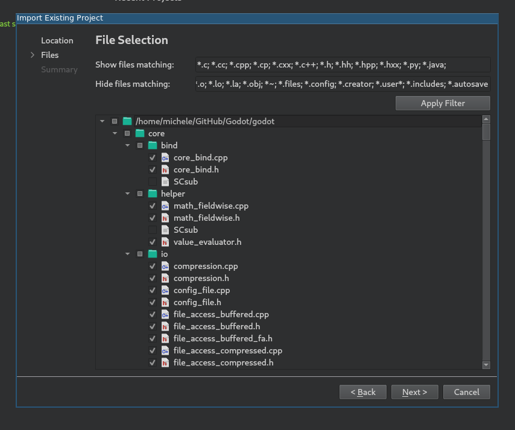
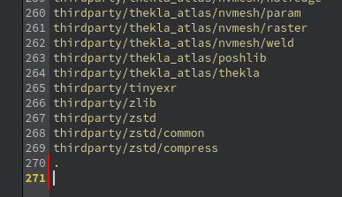
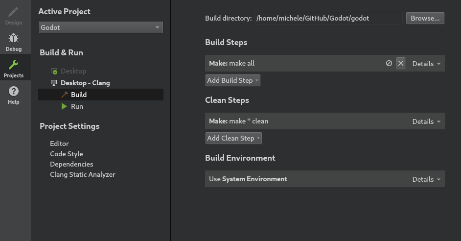
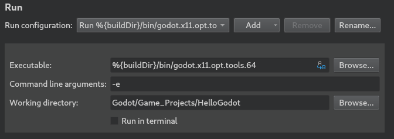
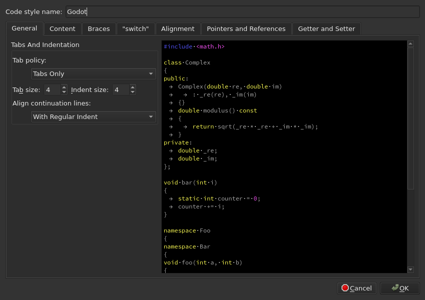

Qt Creator
Qt Creator là một IDE miễn phí, mã nguồn mở cho mọi nền tảng desktop.
Import dự án
Từ màn hình chính của Qt Creator, chọn New Project > Import Project > Import Existing Project.

Trong Location, chọn thư mục gốc của Godot.

Tiếp theo, bạn có thể chọn những thư mục và tệp nào sẽ hiển thị trong dự án. Trong khi các tệp C/C++ được thêm tự động, những phần mở rộng khác cũng có thể hữu ích:
*.glslcho tệp shader,*.pycho tệp của hệ thống build,*.javađể phát triển cho nền tảng Android,*.mmđể phát triển cho nền tảng macOS.

Ghi chú
Bạn có thể thay đổi cấu hình này sau bằng cách nhấp chuột phải vào dự án và chọn tùy chọn Edit Files....

Hoàn tất quá trình import.
Mở tệp
project_name.includesvà thêm một dòng chứa.vào đó để bật tính năng tự hoàn thành mã đúng cách.

Từ menu bên trái, chọn Projects và mở tab Build.
Xóa bước build
makeđược định nghĩa sẵn.

Nhấp Add Build Step > Custom Process Step để thêm một bước build mới với các cài đặt sau:
Lệnh
scons
Tham số
Xem Giới thiệu về hệ thống build để biết danh sách đầy đủ các tham số.

Ghi chú
Nếu build thất bại với lỗi Could not start process "scons", điều đó có thể có nghĩa là scons không nằm trong biến môi trường PATH của bạn. Trong trường hợp này, bạn sẽ phải chỉ định đường dẫn đầy đủ đến tệp nhị phân SCons.
Gỡ lỗi dự án
Từ menu bên trái, chọn Projects và mở tab Run.
Trong Executable, chỉ định đường dẫn đến tệp thực thi nằm trong thư mục
<Godot root directory>/bin. Tên tệp phụ thuộc vào cấu hình build của bạn, ví dụgodot.linuxbsd.editor.dev.x86_64cho nền tảng LinuxBSD 64-bit vớiplatform=editorvàdev_build=yes. Bạn có thể dùng%{buildDir}để tham chiếu đến thư mục gốc của dự án, ví dụ:%{buildDir}/bin/godot.linuxbsd.editor.dev.x86_64.Nếu bạn muốn chạy một dự án cụ thể, hãy chỉ định thư mục gốc của nó trong Working directory.
Nếu bạn muốn chạy trình chỉnh sửa, hãy thêm
-evào trường Command line arguments.

Để tìm hiểu thêm về các tham số dòng lệnh, hãy tham khảo bài hướng dẫn dòng lệnh.
Cấu hình code style
Các nhà phát triển phải tuân theo code style của dự án và IDE nên giúp họ làm điều đó. Theo mặc định, Qt Creator dùng dấu cách để thụt lề, điều này không khớp với hướng dẫn code style của Godot. Bạn có thể thay đổi hành vi này bằng cách đổi Code Style trong Tools > Options > C++.

Nhấp Edit để thay đổi cài đặt hiện tại, rồi nhấp nút Copy Built-in Code Style để đặt một code style mới. Đặt tên cho nó (ví dụ Godot) và đổi Tab policy thành Tabs Only.

Nếu gặp vấn đề, hãy nhờ trợ giúp tại một trong các kênh cộng đồng của Godot.